1Find or create the issue
Search the issue list first. Create a new issue only when the plant outcome is not already tracked.
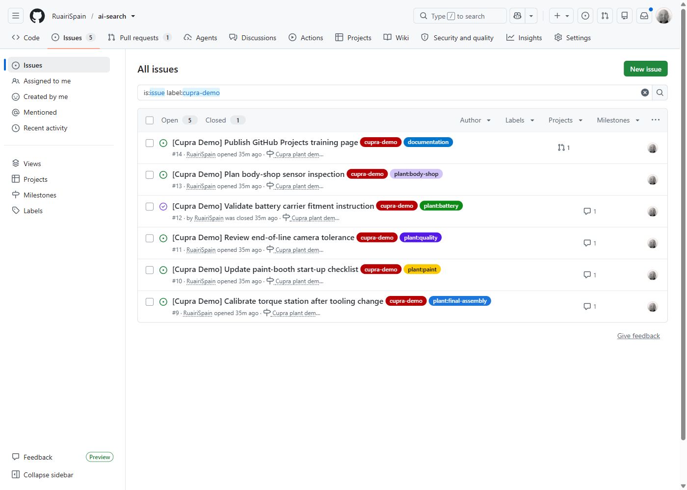
Cupra plant workflow
GitHub Projects supports collaboration and modern Agile work by keeping planning, ownership, discussion, implementation, and status connected. The board gives the team a shared, current view without duplicating delivery work in a separate tracker.
Normal contributor workflow
An issue is a trackable unit of work: a fault, improvement, check, or instruction update. A Kanban board groups those issues by current status so the team can see demand, active work, review queues, and completed outcomes.
Search the issue list first. Create a new issue only when the plant outcome is not already tracked.

Capture a summary, testable acceptance criteria, the plant area, and confirmation that the work is not a duplicate.
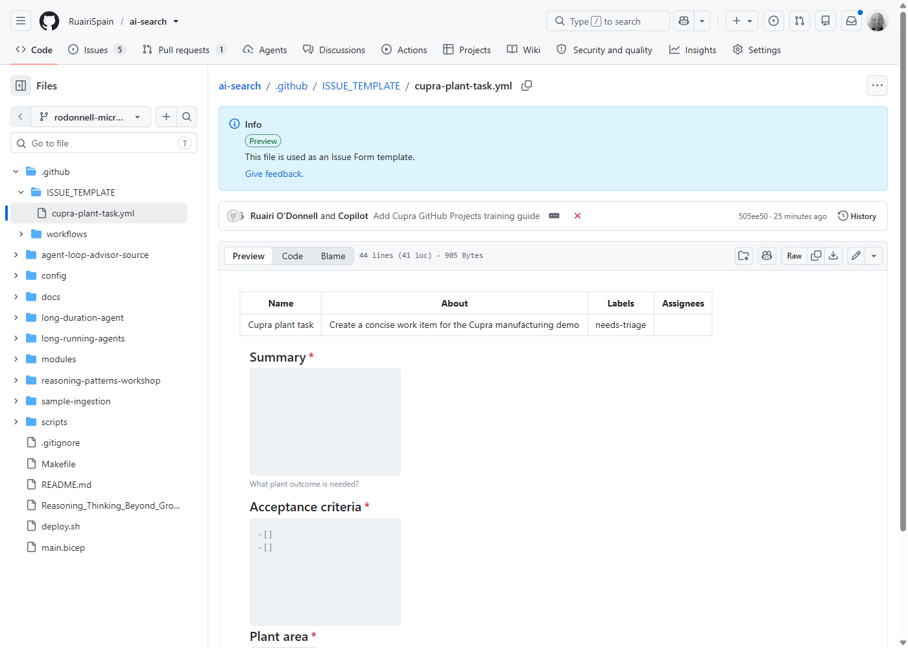
Use the sidebar to set an existing collaborator, plant-area labels, the project, and the pilot-build milestone. Reassign when responsibility changes.
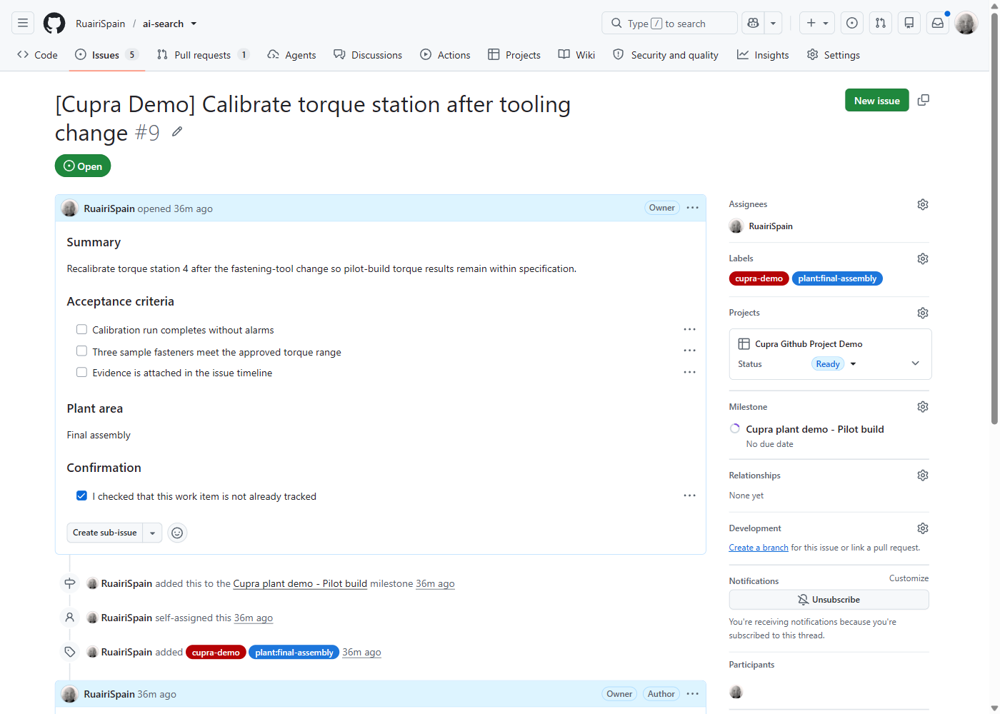
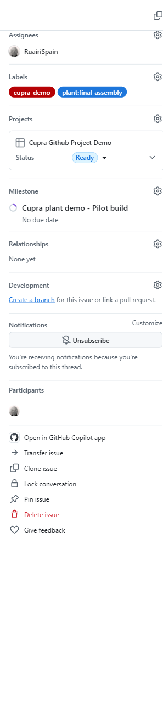
Use comments for decisions, evidence, blockers, and direct hand-offs. Mention the responsible person and update acceptance criteria when the expected outcome changes.
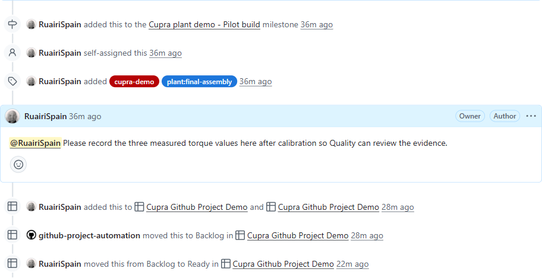
Drag a card between columns or change its Status field. The field value and board column represent the same delivery state.
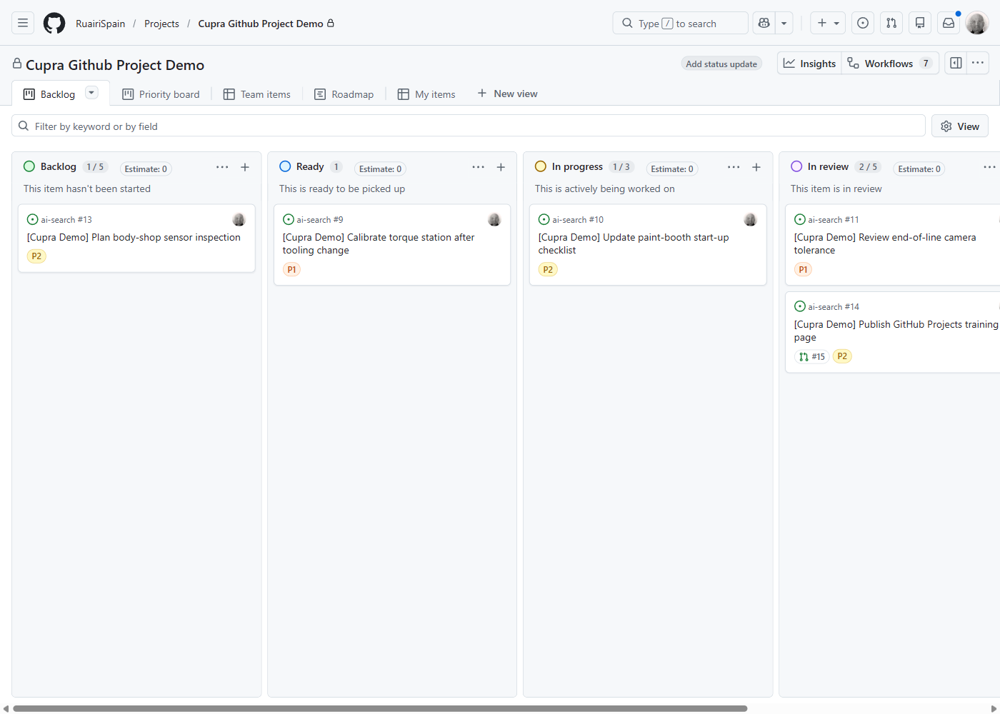
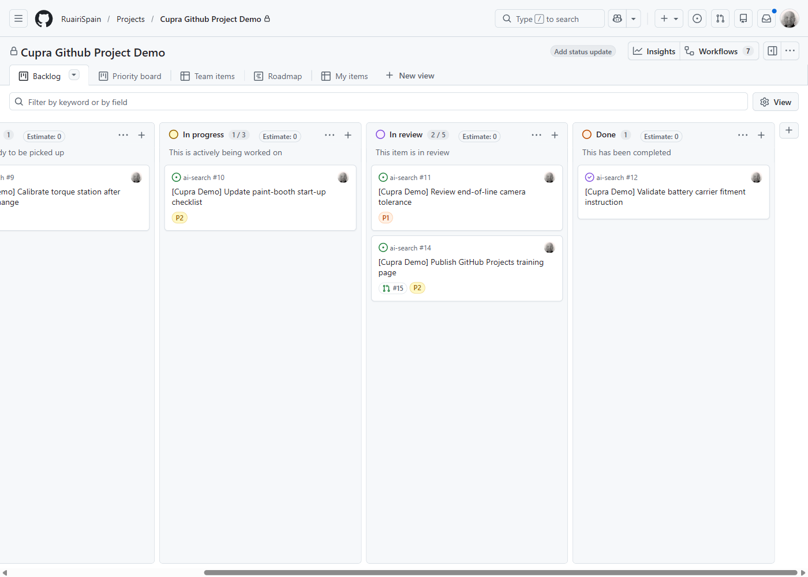
Put Fixes #14 in the pull-request description when the PR completes the issue. GitHub adds Development links in both directions and closes the issue after merge to the default branch.
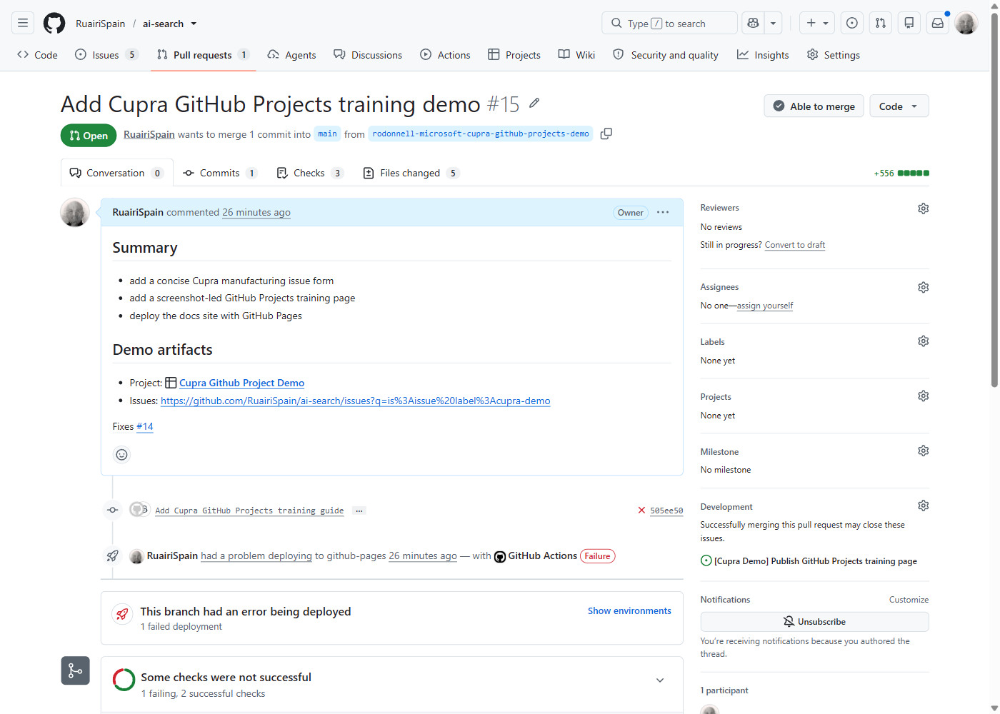
Close completed work with evidence in the timeline. The Done column should contain verified outcomes, not abandoned work.
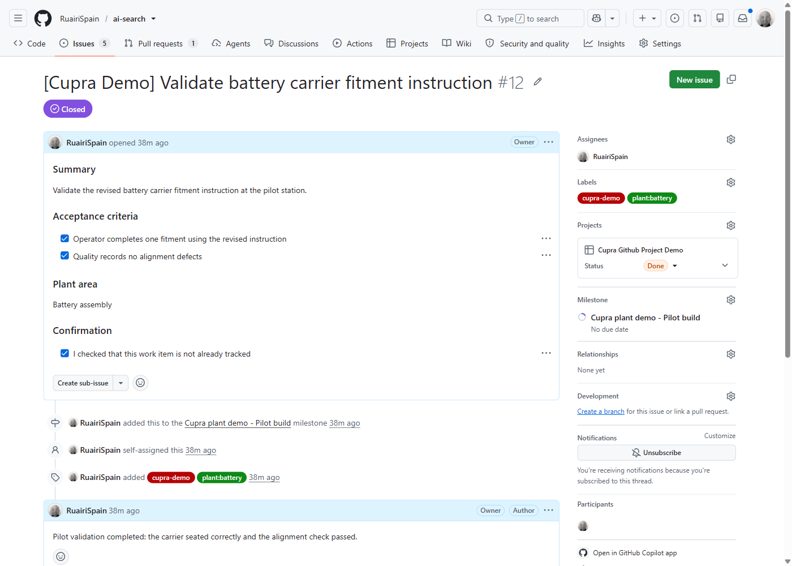
Administration
Project setup is a one-time team task. Start with a board, connect work from the repository, keep the status model small, and add only fields that support a planning decision.
Create a new project named Cupra Github Project Demo. Add only RuairiSpain/ai-search work and make the source repository explicit on every card.
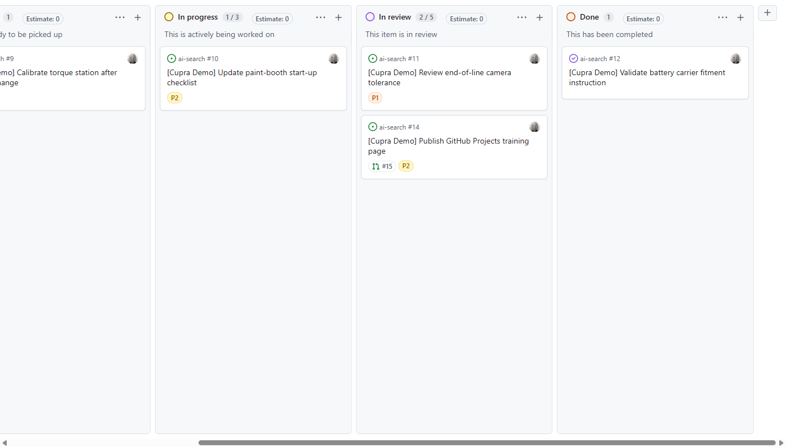
Add .github/ISSUE_TEMPLATE/cupra-plant-task.yml with only Summary, Acceptance criteria, Plant area, and duplicate-check confirmation.
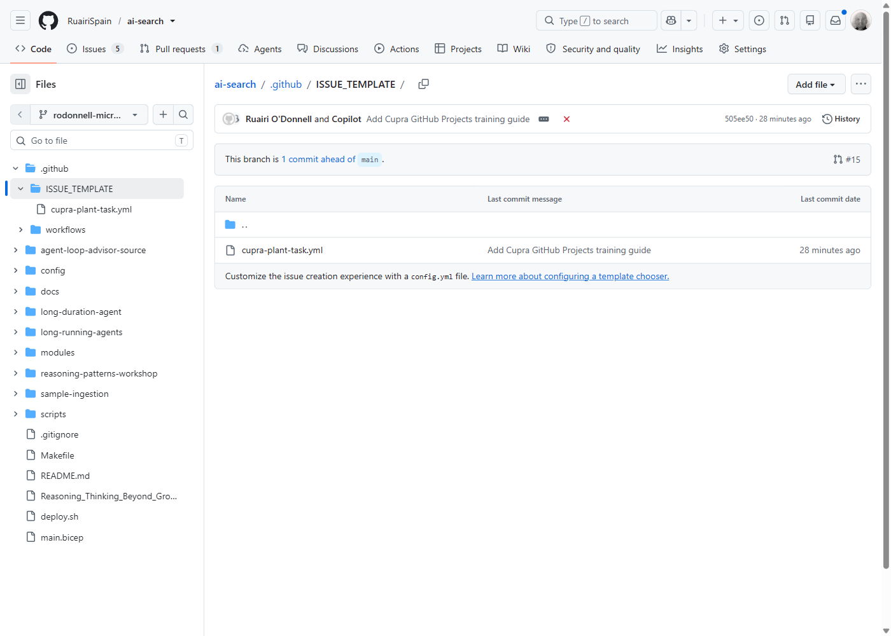
Repository collaborators can be assigned to issues. Add or change access only through repository or organization settings and only with explicit authorization.
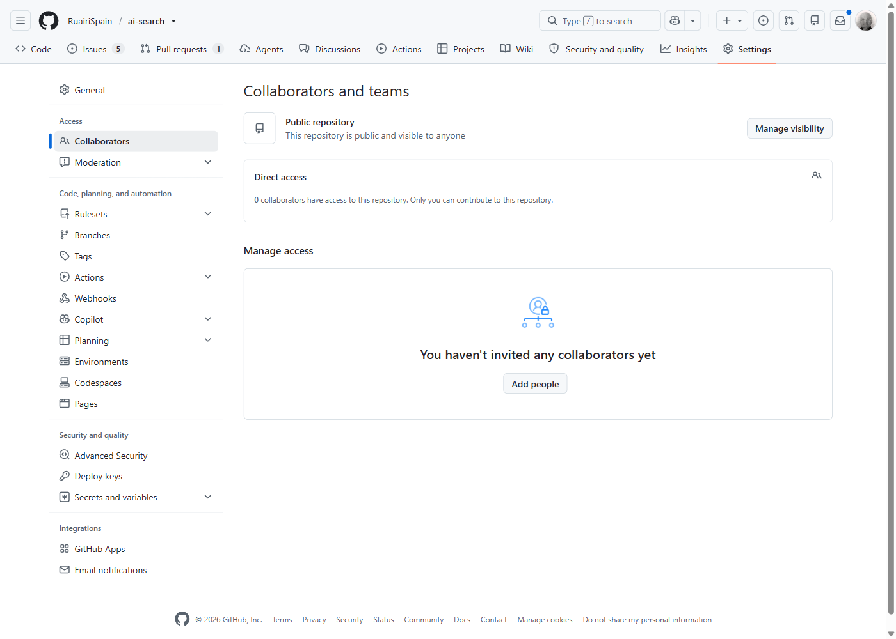
Use five Status values: Backlog, Ready, In Progress, In Review, and Done. Keep the template's small Priority field with P0, P1, and P2.
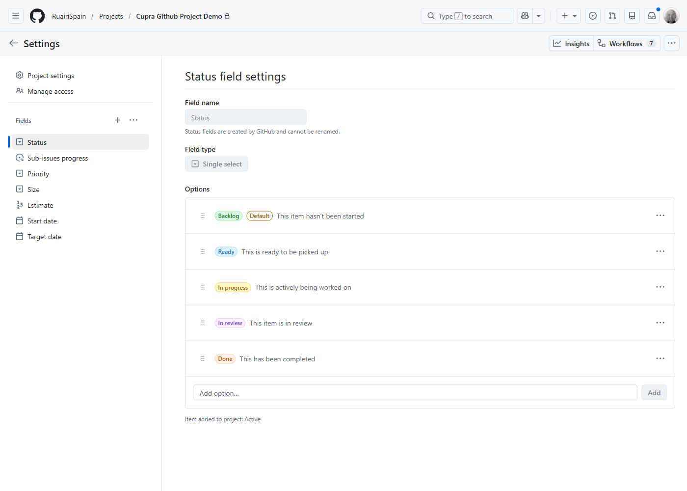
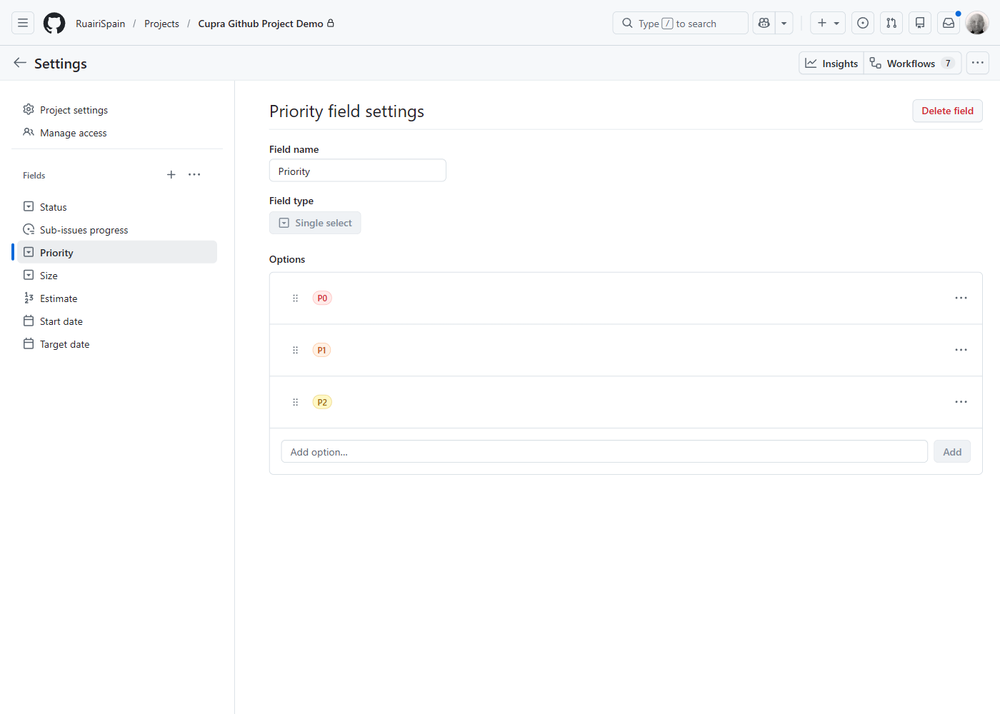
Use the Kanban board for flow, a Priority board to focus planning conversations, and a time-series chart in Insights to compare open and completed item counts. Built-in workflows can reduce status drift by moving closed items to Done and reopened items back to active work.
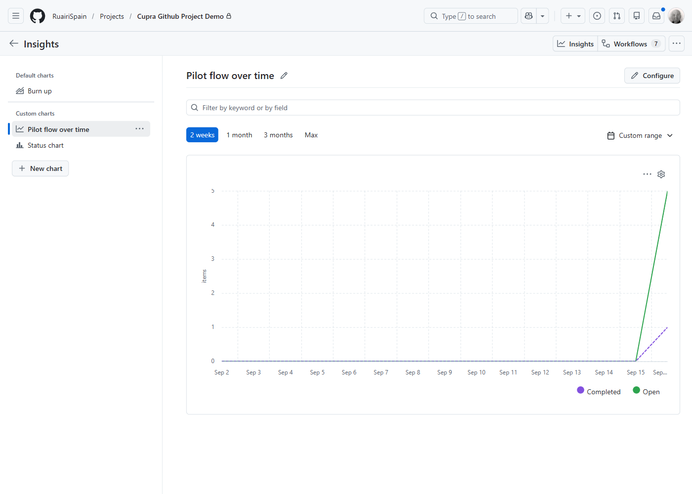
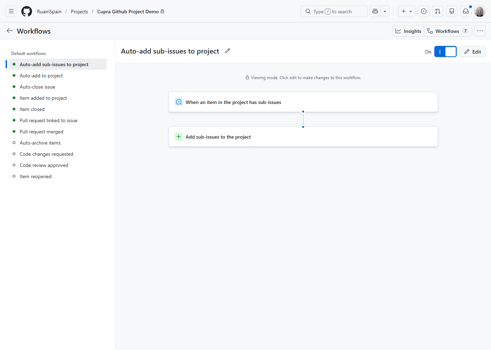
Issue: the work and acceptance criteria. Assignee: the accountable collaborator. Labels: type and plant area. Priority: urgency. Status: current delivery stage. Pull request: the reviewed implementation. Done: completed and verified.
Open Cupra Github Project Demo · Open the destination demo issues